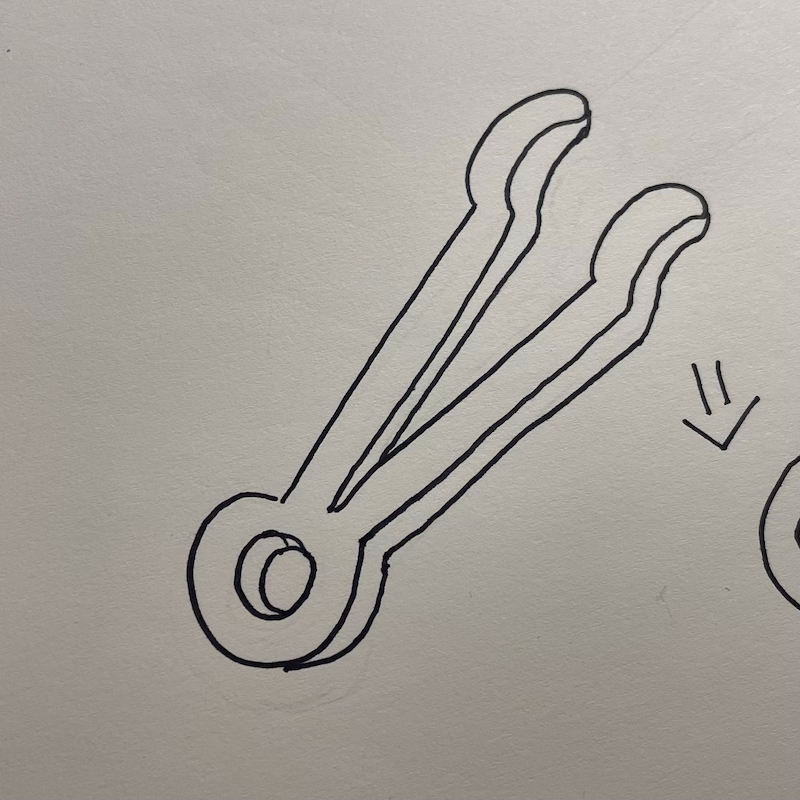
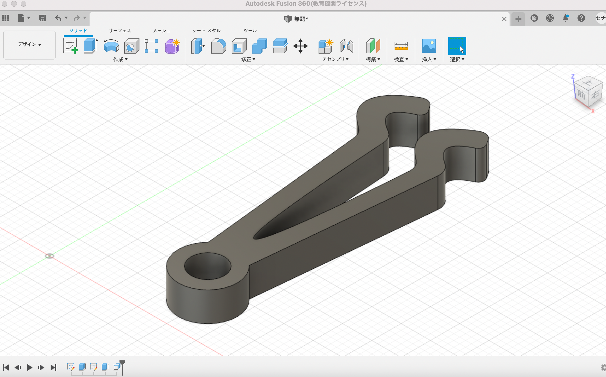
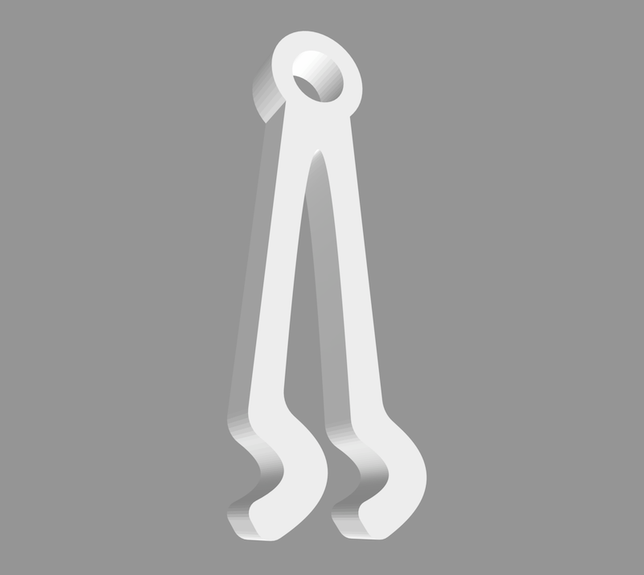

第1回の課題
＜片方向ピンセット＞
①手書きスケッチ

②実際に作った作品の画像

（fusion360での画像）

（プリントする前までの段階）
③設計ファイル
ピンセット完成品
④作品説明
- ピンセットの先端をコンタクトレンズの形にして、レンズの形を維持しながら掴むことができる。
- ピンセットの先端がコンタクトレンズの形なので、レンズにキズなどができない。
⑤なぜこの作品を作ろうという想いに至ったか
- 目が悪いのでほぼ毎日コンタクトレンズなどをつけたりするが、レンズを掴むとき、レンズを掴みやすいピンセットはないのかをまず考えた。
また、時々レンズが折れて掴まったりする時もあるので、これを改善するためにはなんの形が良いのか考えた。
さらに、レンズを掴むときにキズができないようにするためにはどうすれば良いかを考えた。
そこで、ピンセットをレンズの形と似たようにすれば？と考えたからである。